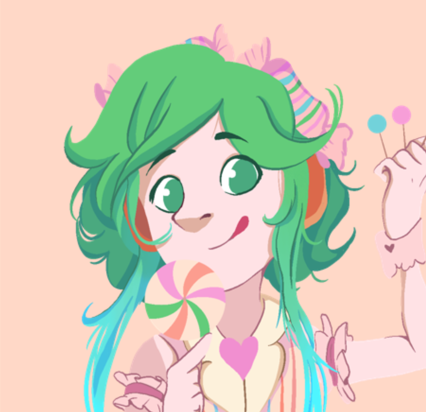
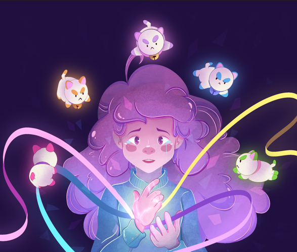
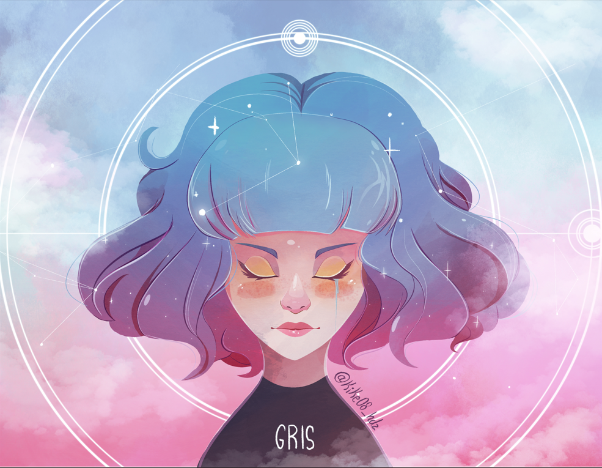
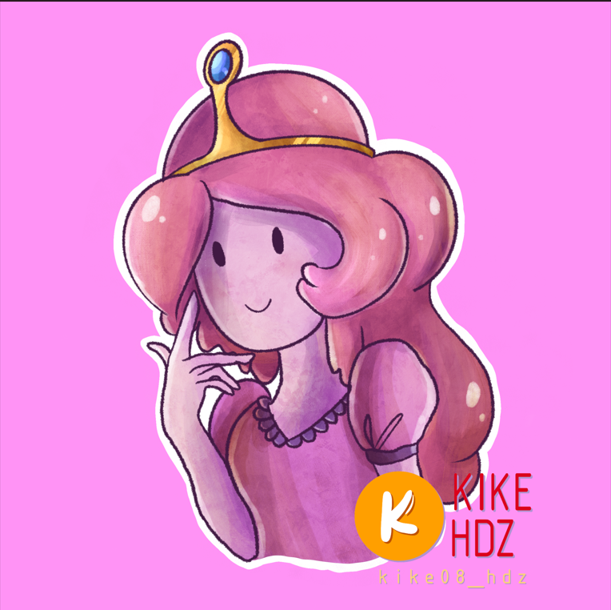

Quique Mx - Canal de Youtube
Inspiracion para Ilustraciones
Las visuales cinematográficas y los mundos virtuales de videojuegos pueden dar vida a personajes, escenarios y situaciones únicas que puedes reinterpretar o evolucionar en tu estilo. Los mundos de ciencia ficción o fantasía, en especial, son ricos en conceptos visuales.
- Candy 
- Bee 
- Gris 
- Princess Bublegum 
todas mis ilustraciones fueron realizadas en Procreate